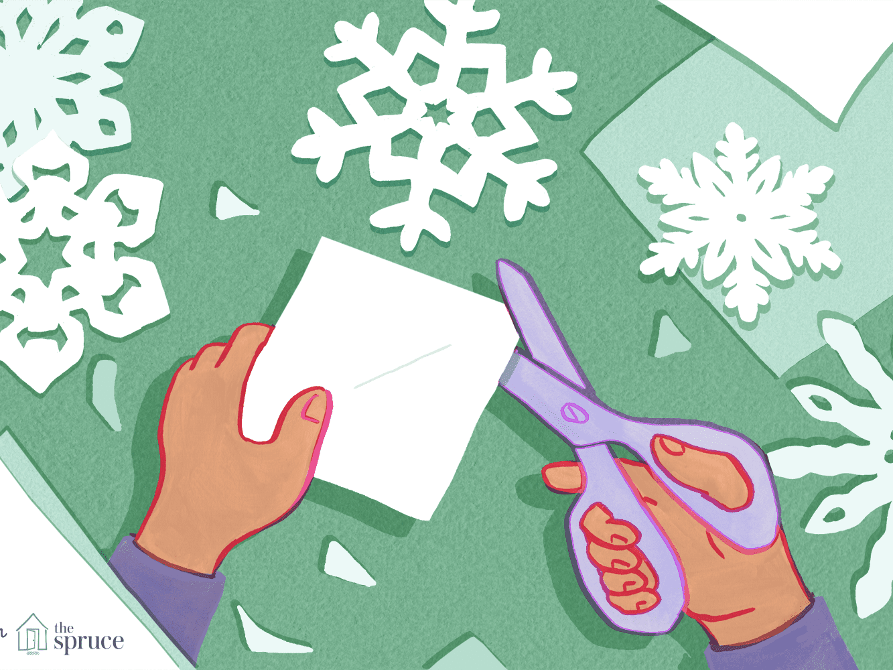
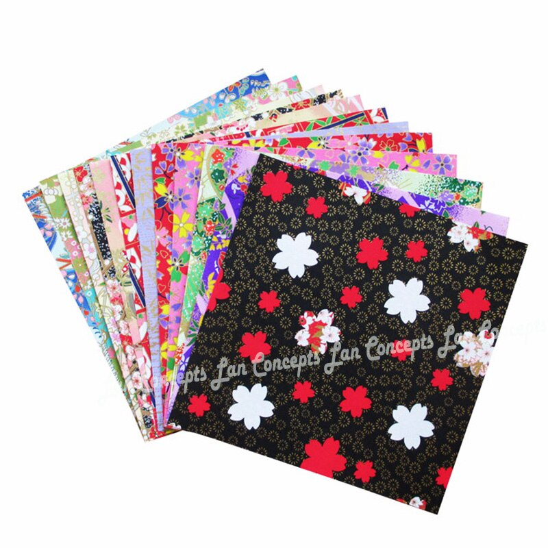
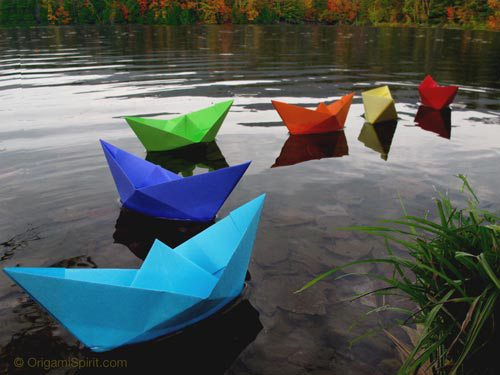
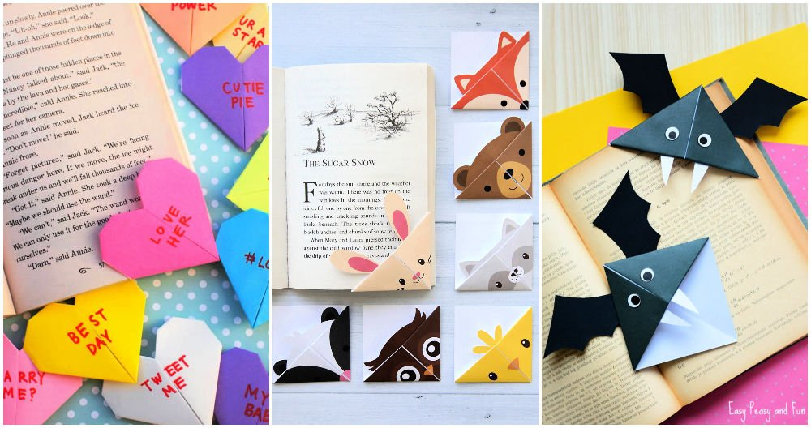
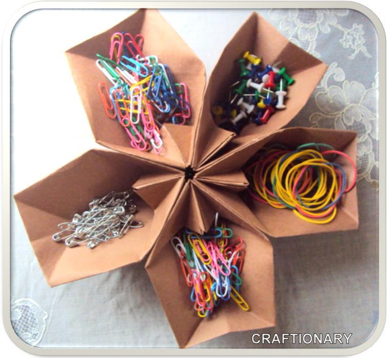
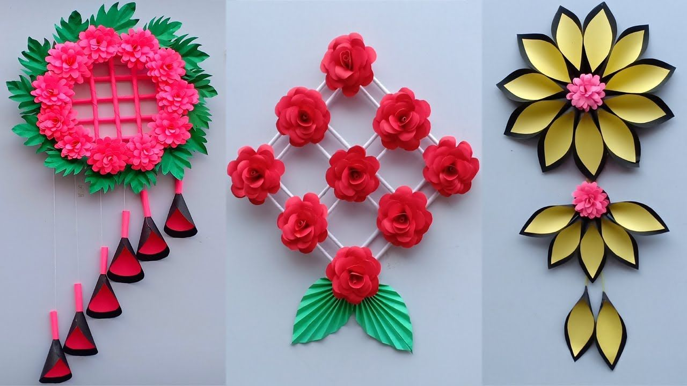
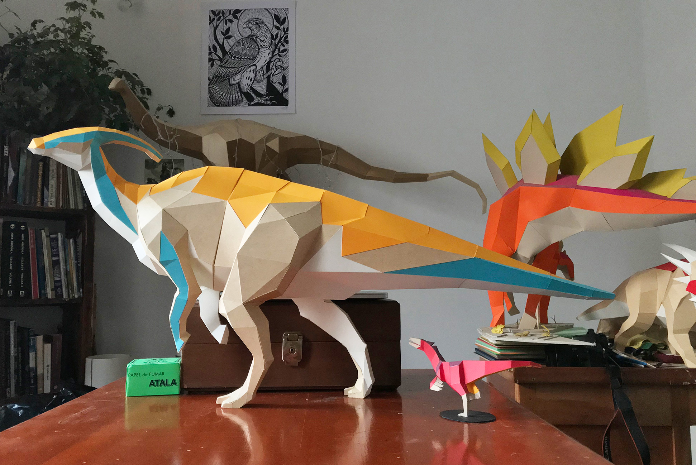

Origami-An Eco Friendly Website
About Us!!
Follow Us..

Origami Papers
Japaneese Papers or Origami Papers are the original sheets from which authentic origami is made.
Even though we can use normal color papers,But these papers are very beautiful and look elegant as a origami model.
They are usually printed and colorful.

Paper Boat
They most commonly known origami artifact is the Origami or Paper Boat.
Though it is too simple, its refreshes all the childhood memories.
It is very easy to make.

Book mark
Enhance your creativity by making your own origami bookmarks for your books.

Selfmade Organizer
Organise your tiny stationary items creatively by your self-made organizer.
It is handy and not too intrecate.

Paper Flower
Decorate your room/office/class with these beautiful flowers which will personalize your space.
You can make it in anyway you want.

Paper Dino
Would be a perfect accessorie for a dinosaur lover's bedroom.
It would be a bit difficult to make, but also would be totally worth it.
